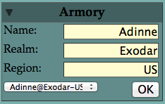
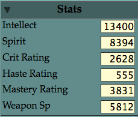
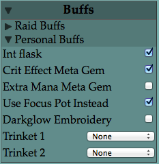
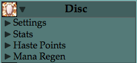
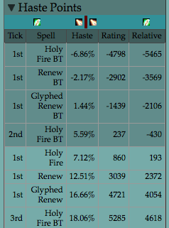
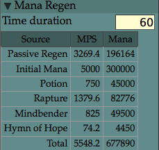
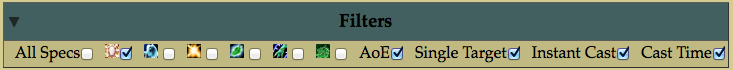
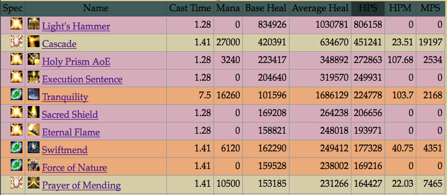
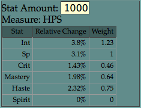
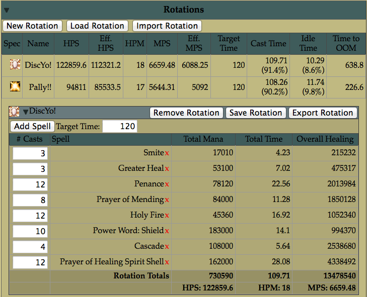

This is the home page for HealCalc, a web-based calculator for all the healing classes of World of Warcraft.
This page will introduce the calculator, which you can find at its new home.
Broad Overview
A brief overview of the main components of HealCalc:
- A table of the healing numbers, cast time and mana costs of all spells. This list by default includes all the spells from all healer classes at once, allowing easy comparison between classes. You can however filter the table according to various criteria.
- The spell table dynamically updates its numbers are you change the stats/other settings. Most class abilities are customizable, if they are reasonable choices (e.g. you can switch between inner fire/inner will, but you cannot turn off the 5% int bonus for wearing the right armor type).
- The spell table contains, among other things, the Healing per Second (HPS), Mana per Second (MPS) and Healing per Mana (HPM) numbers for the spell. You can sort the table according to any of the columns in it, to see for instance which spells are the most mana-efficient.
- Spec Sections, one for each spec, provide spec specific information and settings, including haste breakpoints and mana regen.
- A Rotation section allows you to create ‘rotations’, which are a collection of spells to be cast in a specific amount of time. Rotations can be shared by copy/pasting some simple strings, so you can easily share your rotations with your friends!
- Multiple rotations, from possibly different specs, can be active at the same time. A comparison table shows in summary form how the rotations compare to each other.
- A delta viewer on the right side of the screen provides information on how much would be gained by a fixed increase in each of the various stats. This information can be used to create for instance stat weights. The delta viewer at any given time refers to whatever you mouse over.
- Character profiles can be loaded from Armory. Other profile sources will hopefully appear in the future.
Specifics
The Armory tab
On the top left of the screen you will find the Armory tab, click on it to expand it.

The Armory tab allows you to load someone’s information straight from battle.net. You need to get the spelling exactly right, both for the person and for the realm. Successful searches will be added to the pulldown menu for easy access in the future.
Once all the information is entered and the OK button is pressed, the character’s stats section is updated and the Filter tab is set to only show spells from the person’s spec.
Bugs/Caveats:
- At the moment, all priests are treated as Disc. This is for convenience and to minimize the amount of information requested from battle.net
- At the moment, HealCalc will simply load your character’s stats. Information on glyphs, meta gems, special trinket procs, and profession procs, will need to be entered manually.
The Stats Tab
The Stats tab contains information on basic character statistics. These numbers, if not loaded directly from Armory, should be entered as they appear on your character sheet.

You can edit the values in this tab, to see how different stats values would affect your character. The input values here should be ratings, not the corresponding percentages.
The Buffs Tab
The Buffs tab allows you to set both which raid-wide buffs should be enabled, as well as which personal buffs should be considered. This is where you will enable for instance the crit meta effect, or the trinket procs.

Bugs/Caveats:
- Most proc effects are averaged. For instance, Darkglow Embroidery procs about every 1 minute, and offers 3000 spirit for 15 seconds, for a 25% uptime. This will be interpreted as a flat 750 spirit increase.
- The stats from the gems are already taken into account as part of the character’s stats. The checkboxes in the Buffs tab simply activate the extra gem effect, like the +2% total mana or the +3% critical effect.
The Specs Tabs
The left side of the browser window ends with one tab for each spec. These tabs are only visible if the corresponding spec has not been filtered out in the Filter tab.

Each specs tab has four sub-tabs, each of which can be expanded/collapsed:
- The Settings Tab allows you to set spec-specific settings, for instance whether Inner Fire or Inner Will should be used, what the average distance between Cascade targets should be, how many targets PoH would hit etc.
- The Stats Tab shows you the derived stats for your spec, taking into account specific spec effects, like Inner Fire or Gift of the Wild, as well as the raid-wide or personal buffs selected in the Buffs Tab. These are not meant to be edited.
- The Haste Tab contains useful information regarding haste breakpoints. It has two sections:

At the very top of it you see a haste bar. The red marker in the middle represents your current haste point. Icons on the right represent haste breakpoints that you haven’t reached yet, while those on the left are breakpoints you have reached. For instance in the figure above my character seems to be just after and very close to the next holy fire breakpoint (actually the one on the left is a ‘holy fire under borrowed time’ breakpoint). You can hover over one of the icons to see more information, or you can use the table that follows the bar:
Right below the haste bar is a table of haste breakpoints. Each row represents an extra tick for some spell, what haste percent would be needed for it, what the corresponding haste rating would be, and finally how much haste rating you would need from your current rating. The different colorings represent breakpoints already achieved/still ahead of me. We can see for instance that in my case I have achieved a second extra tick on holy fires cast under borrowed time, which would have been achieved at 5.59% haste. Under my current settings of raid buffs etc this would be achieved with 237 rating, which is 430 rating less than my current haste rating. Ahead of me is the first extra tick of holy fire, which I could achieve by adding 193 haste rating. The next haste breakpoint would be for renew, and I would need an extra 2372 rating to get there.
These values get adjusted as you change settings. For instance removing the 5% raid-wide haste buff will radically change all the rating values.
- The Mana Regen tab shows your character’s various mana sources.

You can specify a fixed interval to consider, it is set to 60 seconds by default. This affects the Mana column for most sources, and the MPS column for pots and initial mana (as these are both one-time sources). Some caveats:
The system currently simply averages mana sources based on their cooldowns, for instance it does not care that you would be able to fit 5 mindbenders in 4.5 minutes, it would compute things based on a 1 mindbender per minute basis (effectively assuming you had used 4.5 mindbenders).
In the Total column an important choice is being made, namely the MPS values for Initial Mana and Potion mana are not being added. The reason for that is that the mana regeneration model I use considers that you have a total initial mana pool, including your original mana and the mana you would get from using the pot, and gradually losing that amount of mana based on your incoming mps and your outgoing mps, until you run out of mana. The time till that happens, is for me a measure of the value of spirit, and to determine that we need to exclude initial mana and potion from the incoming mps computations (as their values in terms of mps are not static, but rather depend on the actual duration length).
Some of the specs are missing some of their mana sources, for instance Seal of Insight and Telluric Currents and Mana Tea. Hopefully these will soon be implemented.
The Filters Tab
At the top of the page is the Filters Tab, which you can use to control which spells/specs are shown. For instance if we wanted to compare the Disc’s and Pally’s single target heals, we would enable only those two specs, and disable AoE.

The Spells Table
The majority of the page is taken over by the spell table, which lists all the spells determined by the filter options above.

Spells for different specs have slightly different background colors. In the figure above, spells are sorted according to the HPS column, as can be seen by the fact that the HPS header is highlighted. Clicking on a header will sort according to a specific header, clicking a second time will change the direction from ascending to descending and vice versa.
The Delta Viewer
On the right of the screen, a little window I call the Delta Viewer shows the effect of various stats on the currently moused over item. For instance when I hover over the HPS entry for the Pally’s Eternal Flame spell, I see the following:

This tells me that the information is about HPS, and that we are talking about Stat increments of 1000 (you can adjust that value). What we can see is that 1000 more intellect would increase Eternal Flame’s HPS by 3.8%, 1000 more spellpower would increase it by 3.1%, 1000 more crit would increase it by 1.43% etc. On the next column we see the stat weights that this would imply, scaled so that spellpower has weight 1. We can see this way that crit would be worth 0.46 of spellpower, intellect would be worth 1.23 spellpower etc. You can use this information across different spells for your spec to decide how you should value the various stats.
More about the Delta Viewer in the Rotation Tab section.
The Rotations Tab
The Rotations Tab allows you to put together a number of spells over a fixed time period, and to look at the total effect of things on this collection of spells. Here’s how it looks with my standard disc priest rotation loaded:

As you can see the Rotations tab has a lot of parts to it.
At the very top there are three buttons for creating new rotations. ‘Add Rotation’ creates a new rotation from scratch. You will have to give it a name and choose a spec. ‘Load Rotation’ will offer you a list of previously saved rotations to choose from. ‘Import Rotation’ allows you to import rotations that others have created. You will be asked to put in the string representing the rotation, which you can copy and paste from an email or web-site or whatnot. For example, here’s the string for my rotation:
DiscYo!&Disc&time:120&3:14&3:2&12:15&8:10&12:13&10:9&4:8&12:12
Pasting this into the field provided when you select ‘Import Rotation’ should load up my rotation for you.
Right below the buttons there is a summary table, which lists all the currently loaded rotations, in my case there are two rotations currently loaded, one for priests and one for pallies. You can see the HPS produced and the MPS cost of these rotations, as well as their respective effective values.
The difference between those values and their effective counterparts is in the total time considered. Each rotation has a target time, in the case of my rotations that time is 120 seconds. The actual time spent casting according to those rotations can be less however, 109.71 and 108.26 seconds respectively. The regular HPS measures the amount of healing produced divided by these cast time, while the effective HPS measures the amount of healing produced divided by the target times of 120 seconds, assuming that you would spend the remaining time (10.29 and 11.74 seconds respectively) being idle/moving without casting/delaying between casts etc. The last entry in those rows is the time you can spend casting your rotation till you go OOM, using the effective mps value for that. In my Disc’s rotation this time is 638.8 seconds.
Hovering over any of these values will show you in the Delta Viewer how much of an effect adding a stat has. This allows you to see overall what impact crit or mastery for instance will have on your overall rotation, instead of just their effect on the spells they favor. This way I can see for instance that crit is overall much better for me than mastery. This can also help you decide how much to value spirit, by seeing its effect on time to oom.
Following this summary table is a table for each spec you have loaded. These tables allow you to adjust what spells to include, and how many times each is used. You can also remove spells by clicking on the little red x’s next to a spell name. Finally you can adjust the target time to consider for your rotation; I like to use as a time the duration of my longest cooldown but you can do anything you like. Finally, 3 buttons at the top right of the table allow you to remove this rotation from the active rotation list, to save the rotation in the browser’s local storage (these can be retrieved from the ‘Load Rotation’ button), or to export a string to be used with the ‘Import Rotation’ button, to share your rotations with your friends.
Note: When you save a rotation, two things are checked: The rotation’s name and spec. If those both match the corresponding values of an existing rotation, that rotation will be overwritten. Luckily this is usually what you want.
Note 2: To ‘clone’ a rotation in order to create a new rotation starting from an existing one, you probably want to do the following: Export your rotation, then change the name of the rotation in the corresponding string (it should appear at the beginning of the string), then paste the new string in the Import Rotation menu.
The End
Well that’s all folks, thank you for reading and I hope you enjoy using HealCalc! Please let me know what you think or what you’d like to see implemented in the following PlusHeal thread.